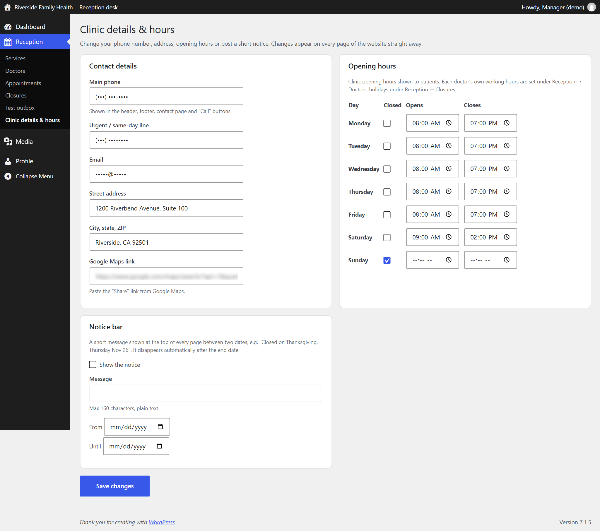
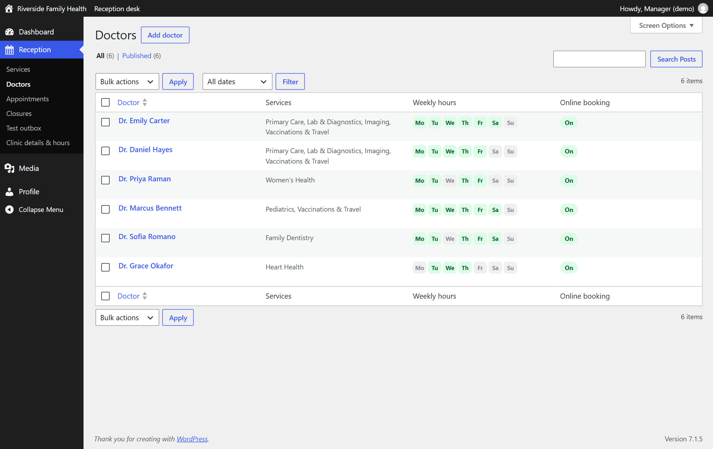
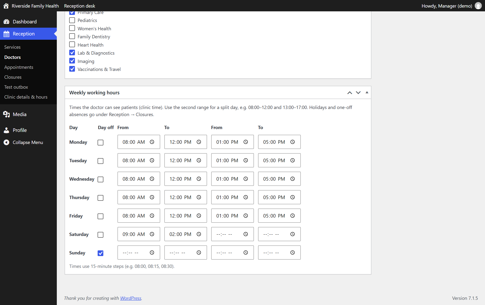
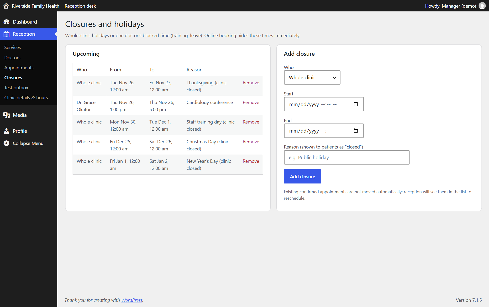
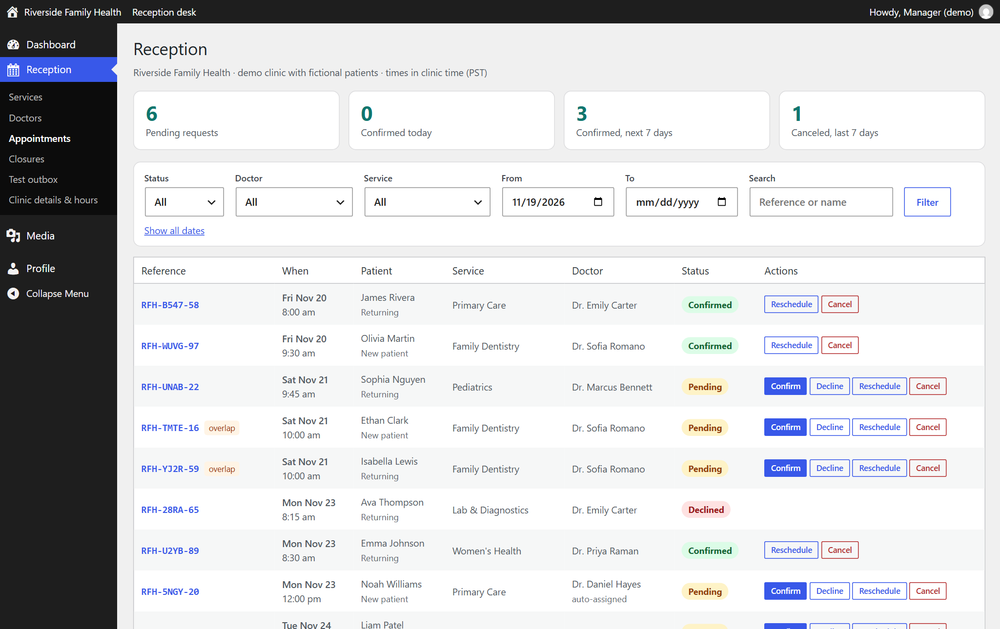

How to update your website
Riverside Family Health · everyday changes you can make yourself, no code needed · demo website with fictional data
Log in: go to your-website/wp-login.php and sign in with your Clinic manager account. Everything below is in the left menu under Reception. Reception staff accounts can manage appointments but cannot change these settings.
| I want to… | Go to | Takes |
|---|
| Change our phone number, email or address | Reception → Clinic details & hours | 1 minute |
| Change our opening hours | Reception → Clinic details & hours | 1 minute |
| Show a message like "Closed on Thanksgiving" | Reception → Clinic details & hours → Notice bar | 1 minute |
| Change a doctor's working days or times | Reception → Doctors → (doctor) | 2 minutes |
| Block a holiday, training day or a doctor's leave | Reception → Closures | 1 minute |
| Stop online booking for a doctor or a service | Reception → Doctors / Services → "Bookable online" | 30 seconds |
1. Phone, email, address and opening hours
- Open Reception → Clinic details & hours.
- Change the field you need. For opening hours, set the opening and closing time for each day, or tick Closed.
- Click Save changes. A green message confirms it; the header, footer, contact page, booking page and the information Google reads all update straight away.

Clinic details & hours. If something is not valid (for example a closing time before the opening time) nothing is saved and the page tells you what to fix.
2. Notice bar (holidays, special news)
- In Clinic details & hours, tick Show the notice and write a short message (max 160 characters).
- Choose From and Until dates. The message appears at the top of every page between those dates and disappears by itself afterwards.
Tip: a notice only informs patients. To stop bookings on a closed day, also add it under Closures (section 4).
3. A doctor's working hours
- Open Reception → Doctors. The list shows each doctor's services, working days (green = working, grey = day off) and whether online booking is on.
- Click the doctor's name. In Weekly working hours, set From and To for each day. Use the second pair for a split day (for example 08:00–12:00 and 13:00–17:00), or tick Day off.
- Click Update. Online booking immediately offers only these times.

Doctors at a glance: services, working days and online booking on/off.

Working hours with time pickers, in 15-minute steps.
4. Holidays, training days and leave
- Open Reception → Closures.
- Choose Whole clinic or one doctor, the start and end, and a short reason (for example "Public holiday").
- Click Add closure. Those times disappear from online booking at once. Existing confirmed appointments are not moved automatically: reception sees them in the list and can reschedule.

5. Good to know
- Who can change what: Clinic manager = everything on this page. Reception = appointments only. Administrator = everything, plus settings.
- History: the clinic details page shows who made the last change and when.
- Safe by design: fixed, labelled fields keep the design, speed and accessibility scores intact; invalid entries are never saved.
- Need something bigger (new pages, new services texts, photos)? Ask your web developer.

The Reception desk, where staff confirm, reschedule or cancel appointment requests.